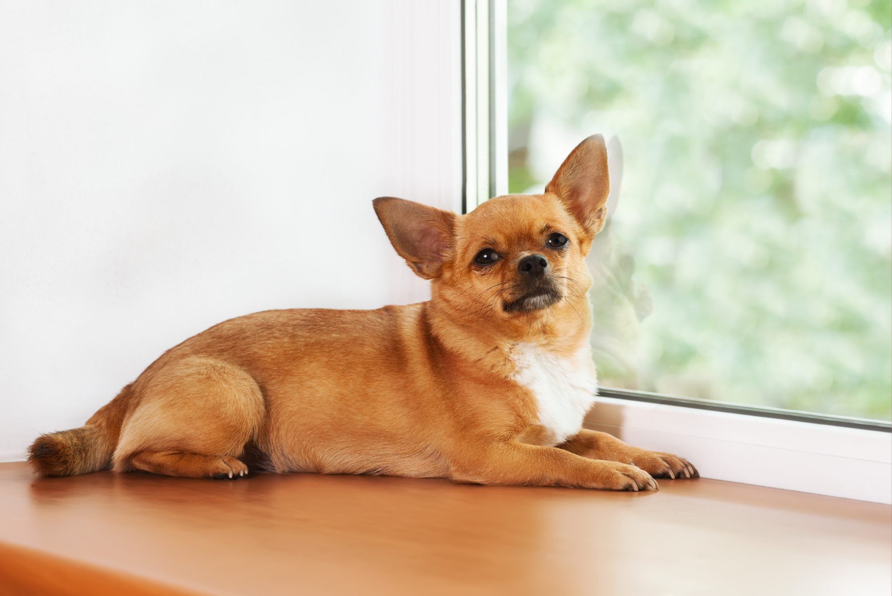

There's something satisfying about opening the windows and letting fresh air move through the house.
The stale air goes out. A cool breeze comes in. Everything feels a little cleaner.
But if you have a cat or dog and deal with allergies, opening the windows isn't always the allergy-friendly choice.
Sometimes fresh air can help improve ventilation. Other times, that open window can bring pollen, mold spores, and other outdoor allergens straight into your home.
So what should you actually do?
The answer depends on what's happening inside your home—and outside your windows.
First, What Are Pet Allergies Actually Reacting To?
If you have pet allergies, you might assume you're reacting to your pet's fur.
But fur isn't usually the main culprit.
Pet allergies are generally triggered by proteins found in things like saliva, skin flakes, and urine. Cats are especially known for producing Fel d 1, a major cat allergen. Dogs can produce several allergens, including Can f 1.
The tricky part is that these allergens are tiny.
They can become airborne, settle into carpets and upholstery, collect on bedding, and travel around your house on clothing and other materials.
So opening a window isn't going to magically remove the pet allergens that have already settled into your home.
Fresh air and a clean, low-allergen home aren't necessarily the same thing.
So, Is Opening the Windows Good or Bad?
Honestly?
It depends.
Opening your windows can improve ventilation and help move stale indoor air outside. That's useful when your home feels stuffy or when you're trying to improve overall air circulation.
But there's one big catch:
The outdoor air you're letting in isn't necessarily allergen-free.
Pollen, mold spores, and other airborne particles can enter your home through open windows.
So if it's a beautiful spring day with pollen levels through the roof, opening every window in the house might not be doing your allergies any favors.
You could simply be replacing one source of airborne particles with another.
3 Times Opening Your Windows Could Make Allergies Worse
Before throwing open the windows, take a quick look at what's happening outside.
1. When Pollen Counts Are High
Trees, grass, and weeds all release pollen at different times of the year.
And when pollen counts are high, an open window gives those particles a pretty easy path indoors.
This can be especially frustrating if you already have pet allergies.
You may start the day dealing with one allergen and end up dealing with several.
Tip: If seasonal allergies are a major trigger for you, check the pollen forecast before opening your windows for hours at a time.
2. When Outdoor Mold Is High
Pollen isn't the only outdoor allergen worth thinking about.
Mold spores can also become airborne and make their way inside.
Damp weather, wet leaves, decaying vegetation, and other moist conditions can contribute to higher outdoor mold levels.
If mold is one of your allergy triggers, a wide-open window during damp conditions may not be the breath of fresh air you're hoping for.
3. When Your Home Already Has Pet Allergens Everywhere
This is the part that's easy to forget.
Opening a window primarily changes what's floating around in the air.
It doesn't remove allergens that have already landed on your:
- Couch
- Carpet
- Rugs
- Curtains
- Bedding
- Pet's bed
- Upholstered furniture
Pet allergens can stick around on household surfaces even after they're no longer floating through the air.
So while ventilation can help with airborne particles, it doesn't replace regular cleaning.
When Should You Keep the Windows Closed?
If pollen or outdoor mold is a major problem for you, keeping the windows closed during high-allergen periods can help limit how much of that material enters your home.
This is especially useful during peak pollen seasons.
That doesn't mean you need to live in a permanently sealed house.
Instead, be strategic about when you open the windows.
A low-pollen day with comfortable weather can be very different from a hot, windy afternoon during peak allergy season.
If you want the benefits of ventilation without constantly guessing, consider checking outdoor pollen levels before deciding whether it's a good window-opening day.
What About Air Conditioning?
Here's where air conditioning can be helpful.
When outdoor allergens are high, keeping the windows closed and using your air conditioning allows you to stay comfortable without constantly bringing outdoor air directly into the house.
And if your HVAC system uses an appropriate high-efficiency filter, your home's filtration system can also help capture some airborne particles.
Just remember:
Your HVAC filter isn't a substitute for cleaning.
It works on particles moving through the system. It won't pick up everything that's already sitting on your couch or hiding in your carpet.
Would an Air Purifier Help?
If you're trying to improve the air inside your home, an air purifier can be another useful tool.
A properly sized HEPA air purifier can capture many airborne particles, including some airborne pet allergens.
This can be particularly useful in rooms where you spend a lot of time.
Your bedroom is a good example.
After all, you spend hours there every night.
But there's an important distinction:
Air purifiers clean the air—not every surface in your home.
If pet allergens have already settled onto your furniture, rugs, or bedding, you'll still need to clean those areas.
Think of air filtration and cleaning as two different pieces of the same puzzle.

5 Simple Ways to Keep Pet Allergens Under Control
If you live with a cat or dog and want to make your home more comfortable, you don't have to rely on one solution.
A combination of small habits can make a bigger difference.
1. Vacuum Regularly
Pet allergens can collect in carpets, rugs, and upholstered furniture.
Regular vacuuming can help reduce the amount of allergen-containing dust around your home.
If possible, use a vacuum with a HEPA filter.
And don't forget those easy-to-miss areas: under the couch, beneath the bed, around furniture, and along baseboards.
2. Wash Pet Bedding
Your pet's favorite bed can become a collection point for hair, dander, and allergens.
Wash pet bedding regularly according to the care instructions.
If your pet has a favorite blanket that spends most of the day on the couch, that deserves regular washing too.
3. Keep Your Bedroom as Low-Allergen as Possible
You spend a lot of time in your bedroom, so keeping it relatively low in allergens can be worthwhile.
If possible, keep pets out of the bedroom, wash bedding regularly, and avoid allowing allergen-collecting fabrics to build up.
Think of your bedroom as your clean-air zone.
4. Clean More Than Just the Floor
Vacuuming the carpet is great.
But your floors aren't the only surfaces collecting pet allergens.
Regularly clean:
- Sofas
- Chairs
- Curtains
- Shelves
- Bedding
- Pet areas
- Other upholstered surfaces
A clean floor doesn't necessarily mean a low-allergen room.
5. Pay Attention to the Air and the Surfaces
This is probably the biggest takeaway.
There are two different things to think about when managing indoor allergens:
What's floating around?
And:
What's already settled around your home?
Ventilation and air purification can help address airborne particles.
Cleaning, vacuuming, and washing fabrics help address allergens that have accumulated on surfaces.
You need to think about both.
So... Should You Open Your Windows?
If you're wondering whether you should open the windows tomorrow morning, here's the simple answer:
Check what's happening outside first.
If pollen and mold levels are low, opening your windows can be a great way to ventilate your home and enjoy some fresh air.
If pollen counts are high—or outdoor allergens are one of your biggest triggers—keeping the windows closed may be the better option.
And if your main concern is pet allergens, remember that opening a window isn't going to remove the allergens already sitting throughout your home.
Think of it this way:
Opening a window changes the air. Cleaning changes the surfaces.
Both can matter.
The Simple Pet-Allergy Home Routine
You don't need to turn your house into a laboratory to make it more allergy-friendly.
Start with a few basic habits:
- Check outdoor allergen levels. Before opening the windows for the day, see what's happening with pollen and mold.
- Ventilate strategically. Open windows when outdoor conditions are favorable instead of leaving them open all day by default.
- Keep the air moving and filtered. Use your HVAC system and consider a HEPA air purifier in the rooms where you spend the most time.
- Vacuum regularly. Focus on carpets, rugs, upholstery, and other places where pet allergens can collect.
- Wash fabrics. Don't forget bedding, blankets, and pet beds.
- Clean the surfaces. Pet allergens don't only live in the air.
The Bottom Line
Opening your windows isn't automatically good or bad for pet allergies.
It depends on what's outside and what's already inside your home.
On a low-pollen day, opening the windows can be a simple way to improve ventilation.
On a high-pollen or high-mold day, however, that same open window could introduce more allergens into your home.
And if you're dealing primarily with pet allergens, remember that they don't disappear just because you let some fresh air inside.
The best approach is usually a combination of smart ventilation, air filtration, regular vacuuming, washing, and surface cleaning.
You shouldn't have to choose between enjoying your home and enjoying life with your pet.
Sometimes, the key isn't getting rid of every allergen.
It's simply being smarter about where they're coming from, where they're collecting, and how you manage them.